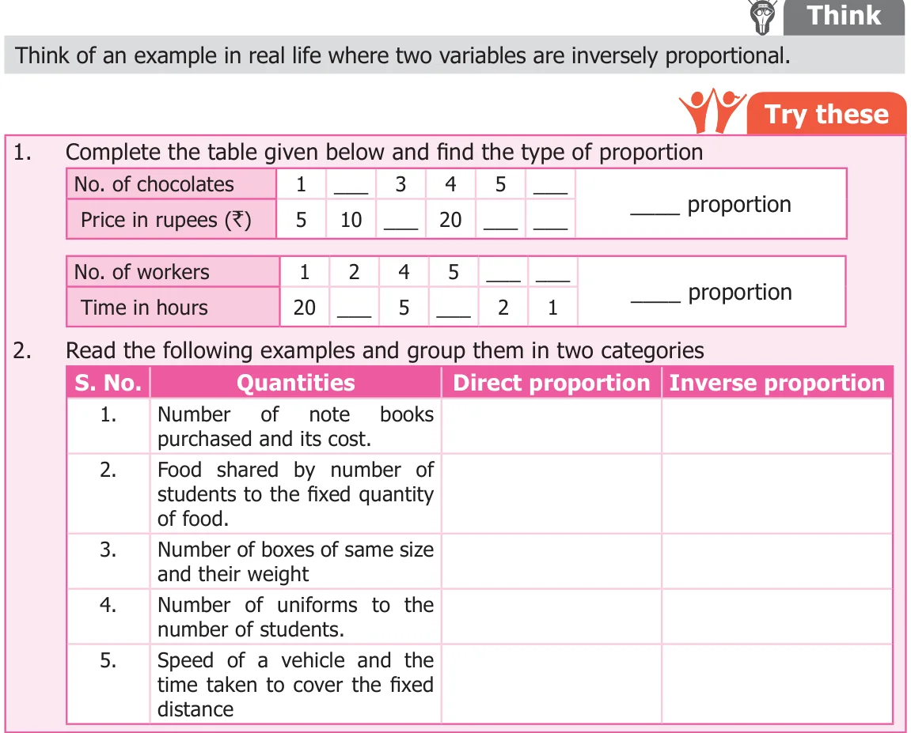
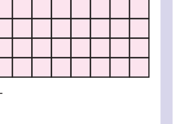
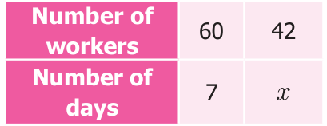
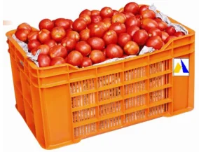
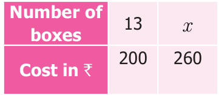

Let us consider the following situation.
Situation The following table shows the number of workers and the number of days to finish the construction of water tank in school.
| Number of workers \((x)\) | 2 | 4 | 5 | 10 |
|---|---|---|---|---|
| Number of days \((y)\) | 40 | 20 | 16 | 8 |
In this situation, the two quantities namely number of workers and the number of days are related to each other. We observe that when the number of workers increases, the number of days to finish the job decreases. Consider the number of workers as \(x\) and the number of days as \(y\) then we note that the product is always the same. That is,
\(x \times y = 2 \times 40 = 4 \times 20 = 5 \times 16 = 10 \times 8\)
Consider each of the value of \(x\) and the corresponding value of \(y\). Their products are all equal say \(xy = 80 = k\) (\(k\) is a constant) and it can be expressed as \(xy = k\) (\(k\) is a constant)
If \(y_1\) and \(y_2\) are the values of \(y\) corresponding to the values of \(x_1\) and \(x_2\) of \(x\) respectively then \(x_1y_1 = x_2y_2\ (=k)\ \frac{x_1}{y_1} = \frac{x_2}{y_2}\). We say that \(x\) and \(y\) are in inverse proportion.

Form all possible rectangles with area 36 sq.cm by completing the following table.

Observe and answer the following
- When length decreases, the breadth ________
- When breadth increases, the length ________
- If the length is 8 cm what will be the breadth? -Discuss.
Extend this activity and try the same with area 24 and 48 sq.units.
Example 4.5
60 workers can spin a bale of cotton in 7 days. In how many days will 42 workers spin it?
Solution
Let \(x\) be the required number of days. The decrease in number of workers lead to the increase in number of days. (Therefore, both are in inverse proportion)

For inverse proportion \(x_1y_1 = x_2y_2\)
Hence \(60 \times 7 = 42 \times x\)
\(42 \times x = 60 \times 7\)
\(x = \frac{60 \times 7}{42}\)
\(x = 10\)
In 10 days 42 workers can spin a bale of cotton.
Example 4.6
The cost of 1 box of tomato is ₹200. Vendan had money to buy 13 boxes. If the cost of the box is increased to ₹260 then how many boxes will he buy with the same amount?
Solution
The cost of one box \(=\) ₹200
Increased cost of one box \(=\) ₹260
Let \(x\) be the number of boxes bought by Vendan.
As cost of boxes increases the number of boxes decreases.
This is in inverse proportion. Therefore, \(x_1y_1 = x_2y_2\)


\(13 \times 200 = x \times 260\)
\(x \times 260 = 13 \times 200\)
\(x = \frac{13 \times 200}{260}\)
\(x = 10\)
Therefore, he can buy 10 boxes for the same amount.
Direct and indirect proportion is very much useful in project scheduling. A project can be any work that is time bound like building a house, construction of bridges, etc.